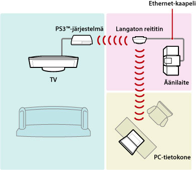
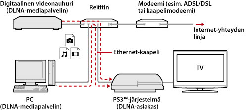
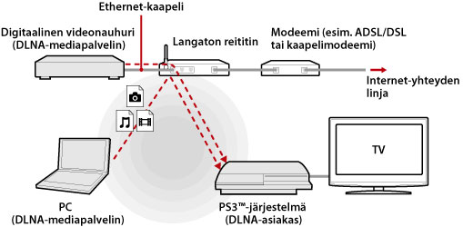
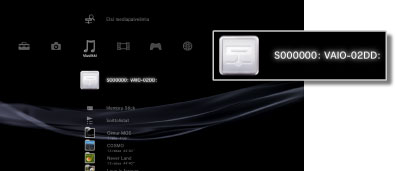
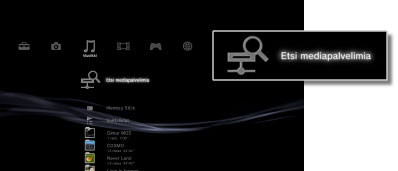

Asetukset > Verkkoasetukset > Mediapalvelinyhteys
Mediapalvelinyhteys
Voit muuttaa DLNA-standardia tukevien laitteiden yhteyden asetuksia.
| Kytke päälle | Ota käyttöön DLNA:ta tukevien laitteiden yhteydet. |
|---|---|
| Kytke pois päältä | Poista käytöstä DLNA:ta tukevien laitteiden yhteydet. |
Tietoja DLNA:sta
DLNA (Digital Living Network Alliance) on standardi, jonka avulla digitaaliset laitteet, kuten PC-tietokoneet, videonauhurit ja televisiot, voidaan liittää verkkoon siten, että liitettyjen DLNA-yhteensopivien laitteiden tiedot ovat yhteiskäytössä.
DLNA-yhteensopivat laitteet voidaan jakaa käyttötarkoituksen mukaan kahteen eri tyyppiin. "Palvelimet" jakavat sisältöä, kuten kuva-, musiikki- tai videotiedostoja, ja "asiakkaat" vastaanottavat ja toistavat tätä sisältöä. Jotkin laitteet soveltuvat molempiin käyttötarkoituksiin. Kun käytät PS3™-järjestelmää asiakkaana, voit katsella verkon välityksellä kuvia tai toistaa musiikki- tai videotiedostoja, jotka on tallennettu DLNA-mediapalvelintoimintoa käyttävään laitteeseen.

PS3™-järjestelmän ja DLNA-mediapalvelimen yhdistäminen toisiinsa
Yhdistä PS3™-järjestelmä ja DLNA-mediapalvelin toisiinsa lähiverkon tai langattoman yhteyden avulla.
Esimerkki yhteyden muodostamisesta PC-tietokoneeseen lähiverkon avulla

Esimerkki yhteyden muodostamisesta PC-tietokoneeseen langattoman verkon avulla

DLNA-mediapalvelimen asetusten määrittäminen
Määritä DLNA-mediapalvelimen asetukset siten, että PS3™-järjestelmä voi käyttää sitä. Seuraavia laitteita voi käyttää DLNA-mediapalvelimina:
- Laitteet, jotka tukevat DLNA-standardia (mukaan lukien muiden yritysten kuin Sonyn tuotteet)
- Tietokoneet (PC), joihin on asennettu Windows Media Player 11
Käytettäessä AV-laitetta DLNA-mediapalvelimena
Ota liitetyn laitteen DLNA-mediapalvelinominaisuudet käyttöön ja määritä sen sisältö yhteiskäyttöön. Asennustapa määräytyy yhdistetyn laitteen mukaan.Lisätietoja on laitteen käyttöohjeessa.
Käytettäessä Microsoft Windows -tietokonetta DLNA-mediapalvelimena
Microsoft Windows -tietokonetta voi käyttää DLNA-mediapalvelimena ottamalla käyttöön Windows Media Player 11 -ominaisuuksia.
1. |
Käynnistä Windows Media Player 11. |
|---|---|
2. |
Valitse [Kirjasto]-valikosta [Median jakaminen]. |
3. |
Valitse [Jaa media]. |
4. |
Valitse [Jaa media] -valintaruutu, valitset laitteet, joiden käyttöön haluat jakaa tietoja, ja valitse sitten [Salli]. |
5. |
Valitse [OK]. |
Vihjeitä
- Windows Media Player 11 -sovellusta ei asenneta oletusarvon mukaan Microsoft Windows -tietokoneisiin. Lataa asennusohjelma Microsoft-sivustosta, jos haluat asentaa Windows Media Player 11 -sovelluksen.
- Lisätietoja Windows Media Player 11 -sovelluksen käyttämisestä on Windows Media Player 11:n ohjeessa.
- Joissakin tapauksissa PC-tietokoneeseen on saatettu asentaa DLNA-mediapalvelinohjelmisto. Lisätietoja on tietokoneen käyttöohjeessa.
DLNA-mediapalvelimen sisällön toistaminen
Kun käynnistät PS3™-järjestelmän, samassa verkossa olevat DLNA-mediapalvelimet tunnistetaan automaattisesti ja niiden kuvakkeet näytetään kohtien  (Kuvat),
(Kuvat),  (Musiikki) ja
(Musiikki) ja  (Videot) alla.
(Videot) alla.
1. |
Valitse sen DLNA-mediapalvelimen kuvake, johon haluat muodostaa yhteyden kohdassa  |
|---|---|
2. |
Valitse tiedosto, jonka haluat toistaa. |
Vihjeitä
- PS3™-järjestelmän on oltava yhteydessä verkkoon. Lisätietoja verkkoasetuksista on tämän oppaan kohdassa
 (Asetukset) >
(Asetukset) >  (Verkkoasetukset) > [Internet-yhteyden asetukset].
(Verkkoasetukset) > [Internet-yhteyden asetukset]. - Jos olet muuttanut IP-osoitteiden varaustavan AutoIP:stä DHCP:ksi verkkoympäristöasetusten alla, hae palvelimia uudelleen kohdassa (Etsi mediapalvelimia).
- DLNA-mediapalvelimen kuvake näytetään vain, kun (Asetukset) -kohdan (Verkkoasetukset) -kohdassa on otettu käyttöön [Mediapalvelinyhteys].
- Näytettävien kansioiden nimet vaihtelevat käytössä olevan DLNA-mediapalvelimen mukaan.
- DLNA-mediapalvelimesta riippuen joitakin tiedostoja ei ehkä voi toistaa ja jotkin toistonaikaiset toiminnot eivät ehkä ole käytettävissä.
- Et voi toistaa tekijänoikeuksilla suojattua sisältöä.
- Palvelimille tallennettujen tietojen tiedostonimet, jotka eivät ole DLNA-yhteensopivia, on saatettu merkitä tiedostonimen vieressä näkyvällä tähtimerkillä. Joissakin tapauksissa tällaisia tiedostoja ei voi toistaa PS3™-järjestelmällä. Vaikka tiedostot olisivatkin toistettavissa PS3™-järjestelmällä, niiden toistaminen muilla laitteilla ei ehkä ole mahdollista.
- Järjestelmä (CECH-4200-sarja tai uudempi) on ehkä liitettävä HDMI-kaapelilla, jotta videosisältöä voidaan toistaa.
DLNA-mediapalvelimien hakeminen manuaalisesti
Voit aloittaa saman verkon DLNA-mediapalvelimien haun. Käytä tätä ominaisuutta, jos DLNA-mediapalvelimia ei havaittu PS3™-järjestelmän käynnistyksen yhteydessä.
Valitse (Kuvat)-, (Musiikki)- tai (Videot) -kohdasta (Etsi mediapalvelimia). Kun hakutulokset tulevat näkyviin ja palaat XMB™-valikkoon, näkyviin tulee luettelo DLNA-mediapalvelimista, joihin voit muodostaa yhteyden.

Vihje
(Etsi mediapalvelimia) näytetään vain, kun [Mediapalvelinyhteys] on otettu käyttöön (Asetukset)-kohdan alta kohdasta (Verkkoasetukset).